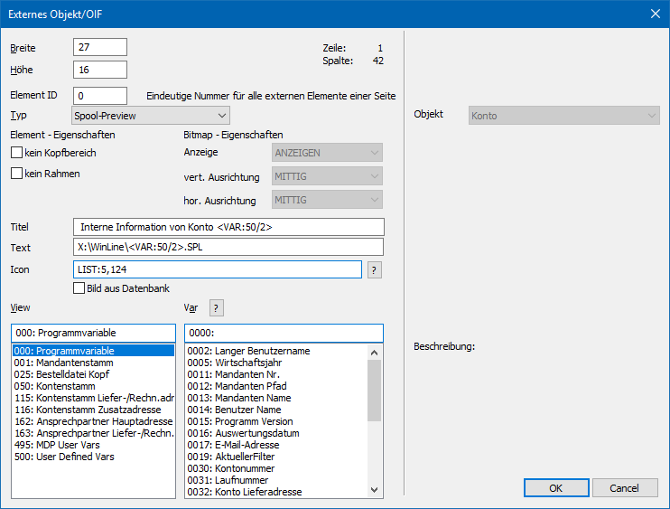
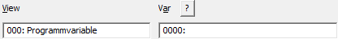
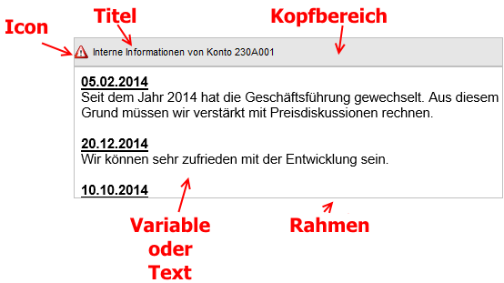

Mit Hilfe des Typs "Spool-Preview" kann der Inhalt einer SPL-Datei dargestellt werden.

Ø Breite / Höhe
In diesen Feldern wird definiert, in welchem Bereich das OIF angedruckt werden soll. Neben der direkten Eingabe kann das Externe Objekt auch via Maus in der Größe verändert werden, wodurch die Werte dann in diese Felder zurückgeschrieben werden.
Hinweis
Der Text wird nicht skaliert, d.h. Textabschnitte, welche über das Externe Objekt hinausragen, werden abgeschnitten (keine Scrollbalken).
Ø Element ID
Hier muss eine eindeutige Nummer (am besten beginnend mit 1) hinterlegt werden. Dieses ist allerdings nur dann notwendig, wenn mehrere OIF´s in einem Formular verwendet werden.
Ø Typ
Aus der Auswahlbox wird für die Ausgabe einer SPL-Datei der Punkt "Spool-Preview" gewählt.
Ø kein Kopfbereich
Wenn diese Option aktiviert wird, dann wird das OIF ohne Kopfbereich angedruckt (auch wenn in den dafür vorgesehenen Felder Informationen hinterlegt sind).
Ø kein Rahmen
Wenn diese Option aktiviert wird, dann wird das OIF ohne Rahmen gedruckt.
Ø Titel
Hier kann der Titel (Überschrift) des OIF´s eingegeben werden. Wenn der Kopfbereich (siehe Option "kein Kopfbereich") mit ausgegeben werden soll, dann wird dieser Titel entsprechend angezeigt.
Ø Text
An dieser Stelle kann der Verweis zur auszugebenden SPL-Datei hinterlegt werden, wenn dieser nicht aus einer Variable stammen soll. Zusätzlich kann mit Hilfe der Syntax '<VAR:X/Y>' auch auf Variablen zugegriffen werden.
Beispiel
Hinweis
Damit der Inhalt vom Feld "Text" für die Ausgabe genutzt wird, muss die View / Var jeweils auf "0" gestellt worden sein.

Ø Icon
Im Eingabefeld "Icon" kann die Grafik angeben werden, welche im Kopfbereich ausgegeben werden soll (Kopfbereich muss hierzu aktiviert sein - siehe Option "kein Kopfbereich"). Falls der Dateiname nicht bekannt ist, kann - analog dem Matchcode der WinLine Programme - mit einem Klick auf das Fragezeichen nach der Grafik gesucht werden. Es empfiehlt sich, alle eingebundenen Grafiken in einem zentralen Verzeichnis (z.B. am Server) zu speichern oder in den Systemtabellen der WinLine zu verwalten.
Hinweis
Mit Hilfe der Option "Bild aus Datenbank" wird gesteuert, ob
das Bild in einem Windows-Verzeichnis liegt oder sich in der
WinLine-Systemdatenbank befindet. Dementsprechend wird auch der Matchcode per
Icon  dargestellt.
dargestellt.
Hinweis 2
Alternativ kann eine der standardmäßig mitgelieferten 5 Bilderlisten mit verschiedenen Symbolen hinterlegt werden (Details entnehmen Sie bitte dem Kapitel Bild). Die Hinterlegung erfolgt in der Form "LIST: Leiste,Bildnummer", d.h. z.B. LIST:5,31.
Ø Bild aus Datenbank
In der WinLine gibt es die Möglichkeit die Grafikdateien zentral in der SQL-Datenbank (Systemdatenbank) abzulegen (nähere Informationen dazu entnehmen Sie bitte dem WinLine START-Handbuch, Kapitel "Grafiken importieren"). Mit dieser Option wird festgelegt, dass die anzugebende Grafik eben aus dieser Datenbank geholt werden soll.
Ø View / Var
Über die Auswahllisten kann die View (d.h. die SQL-Tabelle) und die Variable (d.h. die SQL-Spalte in einer Tabelle) bestimmt werden, welche per Externes Objekt ausgegeben werden soll. Mit Hilfe des Icons kann das Fenster "Variable suchen" geöffnet werden. In diesem ist es möglich per Volltextsuche nach Variablen zu suchen.
Hinweis
Weitere Information entnehmen Sie bitte dem Kapitel Einfügen von Variablen.
Beispiel - Externe Objekt mit dem Typ "Spool-Preview"
